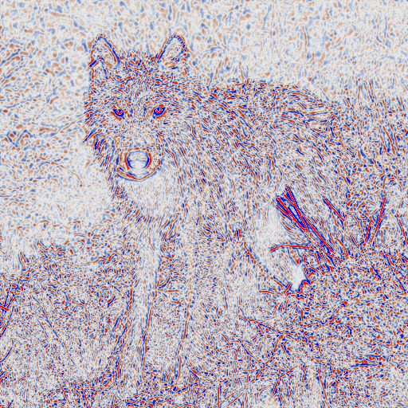
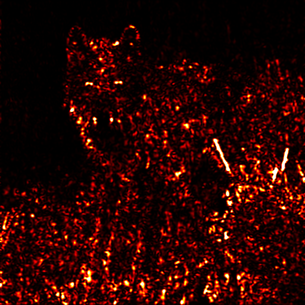
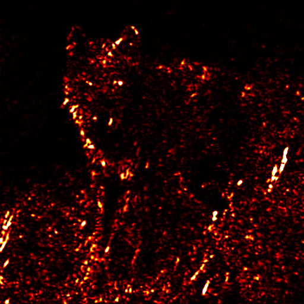
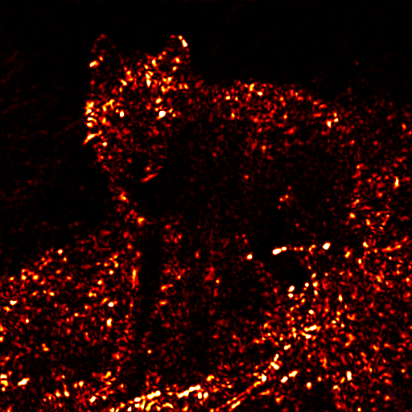
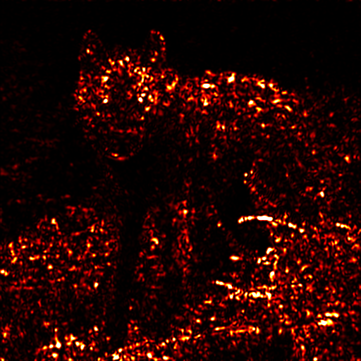
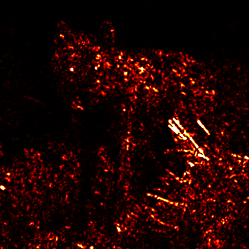
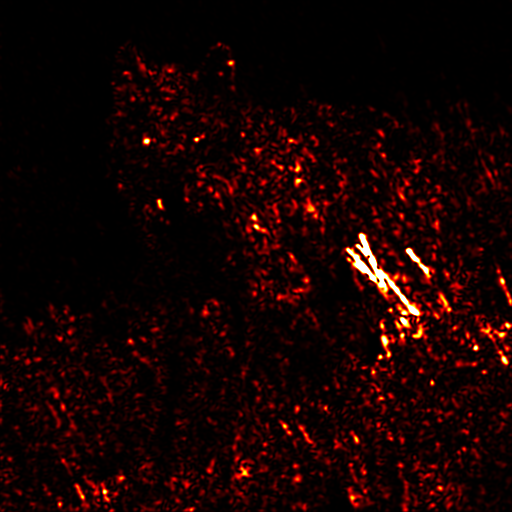
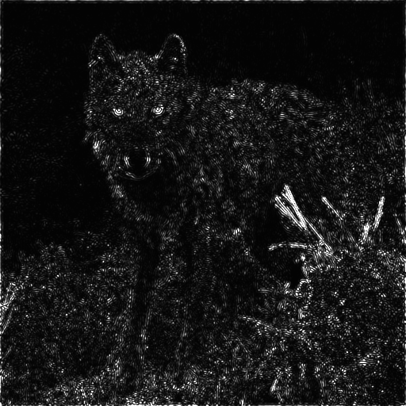
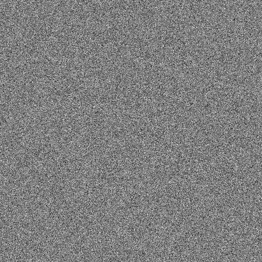
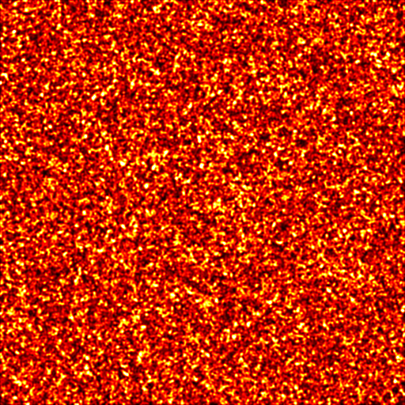

Saliency Thresholds in Neural Code and its Relation to the Power-Law, Gaussian, and Lambert W Function
Alex Alvarez*, Jin Hyun Park*, and Yoonsuck Choe
From natural image to neural threshold
Following Lee and Choe's orientation-energy model, this sequence follows the filtering method formalized in Appendix A.1.
Begin with the scene
The model reads the wolf photograph as luminance. Nothing is marked salient yet; every pixel is simply part of the incoming visual field.


Remove the illumination, keep the transitions
A Difference-of-Gaussians compares each point with a broader neighborhood. Smooth lighting falls away; orange and blue show opposite polarities of local contrast.
Six filters become one energy map
Each angle combines even and odd Gabor phases. As you scroll, the six phase-invariant responses align and add pixel by pixel.







Gather the energies, then count them
Energy is already a scalar. The hot colors are only a display palette; removing that palette exposes one grayscale magnitude per pixel. Binning those magnitudes produces the response histogram h(E).
Summed response Six Eθ channels

Scalar energy E One value per pixel
Natural-image h(E) Heavy response tail
Now give the same filters no contours
A seeded white-noise image goes through the identical center-surround and six-angle filter bank. Its response has no coherent wolf, grass, or edge structure to preserve.

White noise Independent pixel intensities

Noise response No coherent contours
Noise response Empirical control
The empirical noise response motivates the matched Gaussian baseline g(E) used in the paper. The red curve below is that smooth matched baseline, not a literal copy of this one finite noise sample.
Log both axes, then bring the distributions together
The log-log view makes rare, high-energy responses visible. Scroll through the transformation: the separate natural-image and control distributions become the comparison used to locate L2.
From counts to crossover
Natural scenes keep a heavier tail than the matched Gaussian baseline. Their second intersection is the candidate saliency threshold.
Linear axesNow decide how much response is enough
The full response has a heavy-tailed energy distribution. Drag the threshold from rare, high-energy contours toward the lower-energy background.
Drag the slider to reveal pixels by energy level.
*The x-axis is flipped so high-energy pixels (revealed first) appear on the left.
How many pixels are needed to make out what I'm looking at? I perceive the saliency threshold conceptually as the point where marginal information gain per pixel begins to diminish sharply.
We explore a theoretical juncture where the power law, Gaussian, and Lambert W converge to compute saliency thresholds in neural code. The Lambert W function emerges naturally in instances where exponential processes (like the Gaussian's exponentially decaying tails) and polynomial processes (like the power law's polynomially decaying tails) meet. Our results point to a biologically plausible invariant property in neural thresholding that could greatly simplify downstream processing in visual systems and potentially generalizes across different sensory modalities and processing levels.